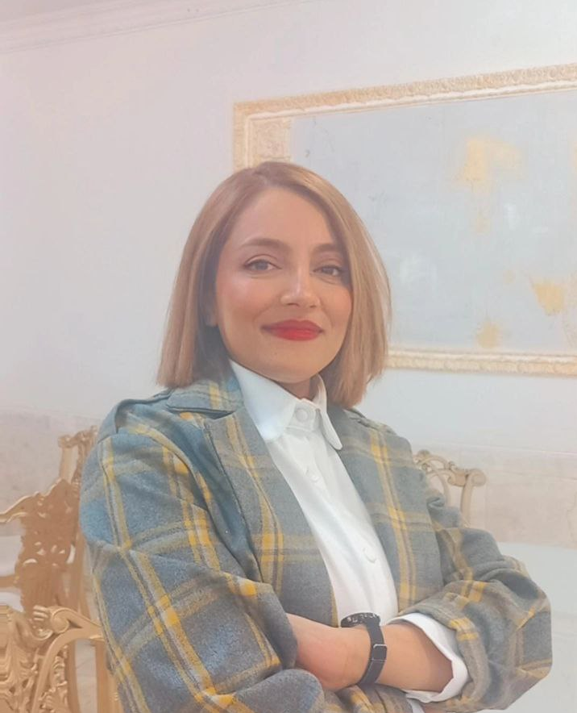

I'm a research assistant working in machine learning at Iran University of Medical Sciences. My MSc thesis built an MRI preprocessing pipeline for gliomas tumor classification, evaluated on the BraTS benchmark, combining classical preprocessing with a bidirectional convolutional LSTM.
Alongside imaging, I work on NLP for clinical and health text — misinformation detection, topic modeling, and fact-checking. I'm especially drawn to problems that combine both: using text and imaging together for prediction, not just classification in isolation.
A fun fact about me — If you can't find me at my computer machine, you'll definitely catch me at my sewing machine — crafting something new!
What's I'm up to? Looking for a Doctor of Philosophy position then I can learn the philosophy of AI
Global Innovation Dynamics in Regenerative Medicine: A Patent-Based Assessment
Journal of Medical Library and Information Science, 2026
A Complete Preprocessing Pipeline for Brain Tumor Classification and Overall Survival Prediction Using Bidirectional Convolutional LSTM
SN Computer Science, 2025 · first author
Classifying and Fact-Checking Health-Related Information About COVID-19 on Twitter Using TextConvoNet
BMC Medical Informatics and Decision Making, 2025
Lion Optimization Algorithms (LOAs): A Review on Theory, Variants, and Applications
IJISCE, 2023 · first author
Research Assistant in Machine Learning
Iran University of Medical Sciences · part-time
Developing ML models for technology analysis in regenerative medicine.
Research Assistant in Machine Learning
Kerman University of Medical Sciences · part-time
CNN-based fact-checking for COVID-19 text classification; topic modeling for oncological studies.
Machine Learning Engineer
Kerman Railways · part-time
RNN-based predictive maintenance models for railway infrastructure degradation.
Lecturer
Technical and Vocational University of Kerman, Iran, Kerman · part-time
Designed and taught courses in Data Science and Web Programming.